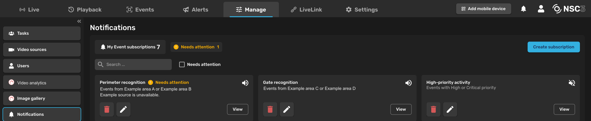

Modirum Platforms · Critical communications
NSC3
Designing new capabilities as part of a coherent product.
Context
NSC3 is a real-time situational-awareness and secure-communications platform for control-room operators and mobile field personnel. It brings video, location information and communications into a shared operational picture, including in degraded network environments.
I work across Modirum Platforms’ critical-communications portfolio, primarily as NSC3’s sole designer. Within R&D, I help shape product direction, define requirements and design operator workflows, collaborating with product and engineering through implementation. I’ve also adapted NSC3’s existing design system for AI-assisted design and development, aligning Figma variables with code tokens and adding guidance for agents.
My direct user research has included organising and conducting a workshop with representatives of organisations using NSC3.

Problem
A customer request is the starting point. The design has to work across the product.
The Events concept is one example. Partner video analytics, body-camera activations and NSC3’s own AI detections all needed a place in the experience. The requests left fundamental questions open: should Events live in Task chat or a dedicated log? What information matters to an operator? When should a detection become a Task?
The challenge was to define one understandable workflow across these sources, while preserving Tasks as the place where teams coordinate their response.
Process
I defined a shared Event concept and designed a dedicated log with inspection on the same page. I organised the information around the operator’s questions: what happened, where, when, how it was detected, what has been done about it and what can be done next.
From inspection, operators can create a Task or an Alert when a response is needed. Personal notification criteria let them decide in advance which Events should demand their attention.
I designed the flow around the operator deciding whether an Event warrants a Task. The product director also phased automatic Task creation into a later iteration. Keeping the initial workflow manual made it possible to inspect a detection before committing to a response.
AI was already part of my workflow when I designed the original Events concept in Figma and worked through the behaviour with developers, who implemented it. Later work on Alerts and attention management expanded its role: agents helped draft requirements, produce designs and implement selected features, while I directed the decisions and developers reviewed the code.
Solution
From a detection to a deliberate response.
- 01Notice
A shared log brings detection sources together. Matching Events notify operators according to their chosen criteria.
- 02Inspect
Review the evidence and context alongside the log.
- 03Act
Create a Task or send an Alert when a response is needed.
Keep the log visible during inspection. The first design stacked the inspection area above the log. Later iterations placed the selected Event in an adjacent panel, keeping the surrounding Events visible while the operator examines the evidence and available actions.
Field reports from an early POC later exposed a different problem: too many Events competing for attention. I reframed the next phase around personal subscriptions, notifications and better inspection. Subscriptions let Controllers define which Events should notify them; filtering narrows the log they are reviewing. These capabilities were deployed to a later face-recognition POC.
A trade-off: where personal subscriptions belong
I proposed placing personal Event subscriptions on the Events page, close to the activity they control. I brought both options to review, including a drawback of my proposal: the controls would compete with the log for space.
The product director chose Manage, following conventions he knew from comparable systems. I worked within that direction, making personal ownership explicit in the naming and structure so these rules would be distinguishable from organisation-wide settings. Manage also offered more room for the information, and I reused its established interaction patterns.

Targeted Alerting was a separate workflow: sending an Alert to selected recipients by SMS and LiveLink, with acknowledgement and recipient status. I refined its requirements and designed its Web and Mobile experiences for another POC.
I built a prototyping environment within NSC3’s codebase using existing product components, directing AI coding agents and submitting their work for developer review.
Impact
From ambiguous requests to implemented POC workflows.
Developers implemented the Events concept, and it was deployed to partner POCs. Subscriptions, notifications and filtering followed in the later face-recognition POC, while Targeted Alerting was deployed for its own customer exercise.
Events and Alerts were deployed for POC use and were not enabled in the general releases at this stage. The later filtering and subscription changes are in field use.
My contribution has been to turn urgent requests into defined requirements and coherent behaviours, follow them through implementation, and revise them as field reports and engineering reviews reveal what needs to change.